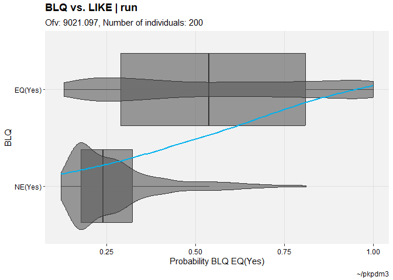

Introduction
This package adds some extra functionality and plots to the xpose framework. This includes some plots that have been missing in translation from xpose4, but also some useful features that truly extend the capabilities of what can be done with xpose.
There are a few bugfixes here and functionality which could easily be suggested as pull requests to the parent package. Given the size and broad use of xpose, it appears even minor pull requests take some time to implement. As such, this package implements those features directly and if at any point in the future these are added (perhaps in a better state) to the parent package, they will be deprecated if this package is in active use.
For those wondering, conflicted is used to manage bugfix conflicts, so users should be comfortable loading packages in any order.
Installation
This package is currently only available here, but submission to CRAN is planned soon.
The typical github installation will work.
devtools::install_github("jprybylski/xpose.xtras")Preview
The grandparent package, xpose4, has a nice collection of figures and documentation that is referred to as a “bestiary”. The documentation site for this package serves as a complete bestiary, but see the uncommented examples below as a sort of menagerie. There is no assumption that these examples are self-explanatory, but hopefully users familiar with xpose will recognize the new (and renewed) tools made available by this package.
EBEs versus covariates
described <- xpdb_x %>%
set_var_labels(AGE="Age", MED1 = "Digoxin", .problem = 1) %>%
set_var_units(AGE="yrs") %>%
set_var_levels(SEX=lvl_sex(), MED1 = lvl_bin())
eta_vs_contcov(described,etavar=ETA1, quiet=TRUE)
#> `geom_smooth()` using formula = 'y ~ x'
#> `geom_smooth()` using formula = 'y ~ x'
eta_vs_catcov(described,etavar=ETA1, quiet=TRUE)
Categorical DVs
pkpd_m3 %>%
set_var_types(catdv=BLQ,dvprobs=LIKE) %>%
set_dv_probs(1, 1~LIKE, .dv_var = BLQ) %>%
set_var_levels(1, BLQ = lvl_bin()) %>%
catdv_vs_dvprobs(quiet=TRUE)
#> `geom_smooth()` using method = 'gam' and formula = 'y ~ s(x, bs = "cs")'
#> `geom_smooth()` using method = 'gam' and formula = 'y ~ s(x, bs = "cs")'